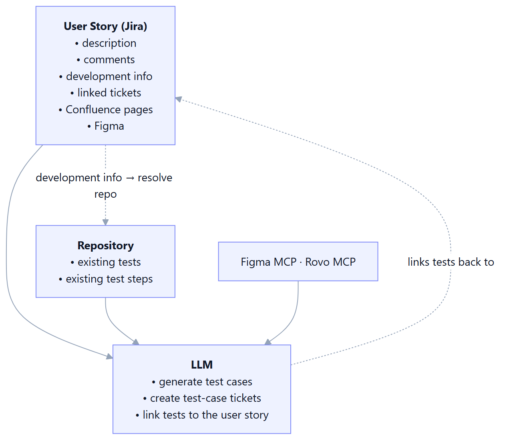
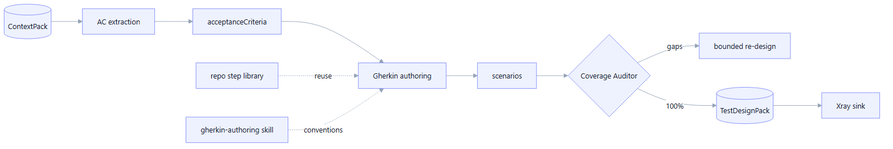
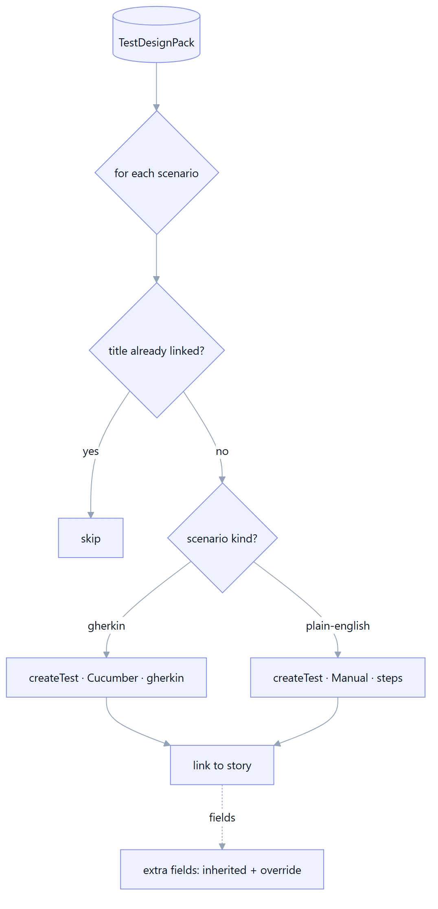
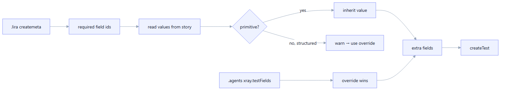
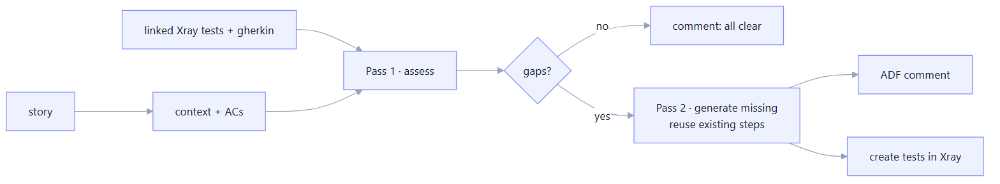

Test Design & Xray
From a ContextPack to acceptance-criteria-traced Gherkin scenarios, gated for coverage and uploaded to Xray as linked Cucumber tests — plus a coverage-gap analyser for existing tickets.
Overview
The Test Design Engine is a chain of sub-agents driven by the design-tests verb:
Researcher → Test Architect → Coverage Auditor → Xray sink. It produces a Zod-validated
TestDesignPack (scenarios, AC coverage matrix, risk ranking, open questions, provenance) and
.feature files, then optionally pushes the scenarios to Xray.


Acceptance-criteria extraction
The first LLM pass reads the story (description, comments, evidence) and extracts a structured list of acceptance criteria — each with an id and text. These ids become the backbone of coverage: every scenario references the AC ids it verifies, and the Coverage Auditor checks that none are orphaned.
Tech stack
How it works
- The skill body + the ContextPack form the prompt.
- The model returns a JSON array validated against
AcArraySchema. - The ACs enrich the ContextPack and feed the Gherkin author + the coverage matrix.
Gherkin authoring
The Test Architect turns ACs + evidence into Gherkin scenarios in business language. Each
scenario carries structured fields — title, feature, tags, the AC ids it covers, risk, readiness, objective,
preconditions, steps (Given/When/Then), source evidence, and a rationale — not just free text. Authoring is
steered by the packaged gherkin-authoring skill (a SKILL.md the repo can override).
Tech stack
Coverage gate
The Coverage Auditor enforces the SLO that every acceptance criterion has at least one
scenario. On gaps it either fails the run (gate required) or records
openQuestions (gate warn), and can trigger a bounded second design pass scoped only
to the uncovered ACs (≤ 2 retries).
Tech stack
Beyond the ACs — derived requirements & risk/edge coverage (M22)
The acceptance criteria are the stated contract, not the whole requirement — and the AC gate only measures that floor. M22 closes the gap so exploratory coverage is measured, not hoped for:
- Derived-requirement extraction — a pass that mines the full context for implied behaviours
the ACs don't state (error, boundary, security, data, state). Each
DerivedRequirementcarries acategory,risk, andsourceEvidence, and is kept separate from the ACs so the product contract stays honest. The author then covers them too (scenariodrIds). - Risk/edge coverage gate — every high-risk AC or derived requirement must have at
least one negative or boundary scenario (a structured scenario
polarity, not a tag); an uncovered derived requirement is itself a gap. Surfaced in theriskCoverageMatrix. - Adversarial critique — one bounded "what did this design miss?" pass that folds in genuinely-missing scenarios (no duplicates) and records the rest as gaps / open questions.
Tech stack
warn and the extra
passes are resilient (warn + skip on failure) and budget-bounded — they enrich coverage without blocking a run.Output modes: Gherkin or plain-English
Not every team automates everything. testDesign.outputMode selects one of two modes:
gherkin (Given/When/Then → uploaded as Xray Cucumber tests) or
plain-english (manual test cases with action/expected-result steps → uploaded as Xray
Manual tests). Gherkin is always the default; you opt into manual tests
explicitly. The same structured fields (coverage, risk, tags) apply uniformly, so coverage and ranking work
regardless of mode.
kindStep reuse from the repo
To avoid inventing near-duplicate steps that would need new step definitions, the author is fed the
repository's existing step vocabulary. extractStepLibrary scans the target repo's
.feature files, normalizes step phrasings, and surfaces them (and the existing scenario titles)
so the LLM reuses what's already implemented.
Tech stack
The same inventory powers de-duplication: scenarios whose title already exists in the repo aren't re-created.
Gherkin data tables
List-style assertions ("the table shows these columns…") belong in a Gherkin data table,
not a pile of And steps. The GherkinStep schema supports an optional
dataTable (rows of non-empty cells), and both the renderer and the reverse parser handle it — so
designs round-trip cleanly to and from Xray.
Xray: Cucumber & Manual upload
With --yes (or the standing humanReviewBeforeUpload=false gate), the Xray sink
creates one test per scenario via Xray Cloud's GraphQL createTest mutation, labels it, and links it
to the source story. The test type follows the scenario kind: a Gherkin scenario becomes a
Cucumber test (its gherkin body), and a plain-English scenario becomes a
Manual test (its action/expected-result pairs map to manual steps[]). It is
idempotent by normalized title (normalizeTestTitle —
case/punctuation/unicode-insensitive): a scenario is skipped when it matches an already-linked test or
another scenario in the same run, so a reworded title can't slip a near-duplicate past an exact-match check.
Tech stack

Link-relationship resolution
A test should appear on the story as "is tested by", not "tests". Jira labels a link by the
side the other issue sits on, so orientation matters. resolveLinkType matches the configured
value (default "is tested by") against Jira's link types by name or inward/outward
description and picks the direction so the story displays the intended phrase — placing
the test as the inward issue.
Tech stack
Project-mandatory field handling
Different Jira projects make different fields mandatory on issue creation (e.g. a Tempo Account). To create Test issues anywhere, Manso resolves the extra fields the create needs in two layers:
- Inherit from the story. Query Jira
createmetafor the Test issue type's required fields, then copy primitive values from the source story (which already satisfies its project's rules). Zero config. - Override via config or flag. For fields whose read shape ≠ write shape (Tempo Account reads
as
{id,value}but writes as a bare number), setxray.testFieldsin the repo's.agents/manso.config.jsonor pass--test-fields '{...}'; the flag wins. - Per-QA attribution.
--reporter <accountId>sets the Reporter on created Test issues — a Jira rule passes{{initiator.accountId}}so tests are attributed to the triggering QA (the shared credential stays the Creator). Needs the project's Modify Reporter permission; an explicitreporterin--test-fieldswins.
Tech stack

Coverage gap analysis
For a ticket that already has tests, the analyse-coverage verb assesses how well the
linked Cucumber tests cover the story. An LLM acting as a senior QA engineer rates coverage
(good/partial/poor), lists uncovered criteria and gaps, then — for real gaps — generates the
missing scenarios, posts the analysis as a Jira comment (ADF), and creates the new tests in
Xray. Generated steps reuse the existing tests' (and repo's) step phrasings to avoid duplicate definitions.
Tech stack
How it works
- Fetch the story context + every linked Cucumber test (with its Gherkin).
- Pass 1: assess coverage and identify gaps.
- Pass 2 (only if gaps): generate scenarios, reusing existing step phrasings; drop any that fail schema validation.
--commentposts the gap analysis as an ADF comment;--create-tests --yescreates the missing tests (with link + mandatory-field handling).
